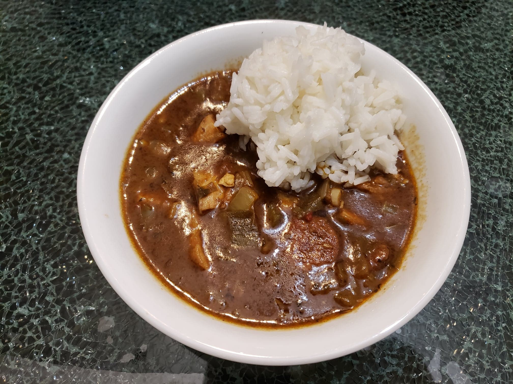

Gumbo

Ingredients:
- 2 lb Chicken breasts, halved
- 12 oz Andouille sausage, sliced
- 8 oz Okra, 1" slices
- 1/2 cup Canola oil + more for frying
- 1/2 cup Flour
- 1 large Onion, diced
- 1 large Green bell pepper, diced
- 3-4 sticks Celery, diced
- 3 large cloves Garlic, minced
- 1 14.5 oz can Diced tomatoes
- 2 Bay leaves
- 1 tbsp Paprika
- 1 tsp dried Thyme
- 1 tsp dried Oregano
- Up to 1 tsp Cayenne pepper, to taste
- 1/2 tsp Black pepper + more to taste
- 1 tsp Salt + more to taste
- 32 oz Unsalted chicken broth
- Optional: 1-2 Scallions, minced
- Optional: 1 tbsp Gumbo filé
Instructions:
- Season the chicken breasts with salt and very heavily with black pepper. Let rest while preparing the other ingredients.
- In a medium-sized saucepan, add okra and water to cover. Bring to a boil, then reduce heat and cover. Simmer for about 8 minutes until tender, stirring occasionally. Drain the okra and reserve.
- In an oiled pan over medium-high heat, sear the chicken for 4-5 minutes on each side. Set aside and reserve.
- In the same pan over medium heat, sauté the sausage slices until browned. Set aside and reserve.
- In a large pot, combine the 1/2 cup oil and 1/2 cup flour. Cook over medium heat while stirring with a whisk constantly for up to an hour until the roux is the color of a dark chocolate. Raising the heat will reduce the cooking time but provide a higher risk of burning the roux. Make sure to mix constantly to not burn the roux.
- Once the roux is the correct color, reduce to medium heat if not already and add in the onions, green bell pepper, and celery. Sauté until the onions begin to sweat and the vegetables are tender, about 8 minutes. Then, add in the garlic and sauté for 1-2 more minutes.
- Add cooked okra, tomatoes, and sliced Andouille sausage. Cook for 10 minutes, stirring occasionally.
- Add bay leaves, paprika, thyme, oregano, cayenne, black pepper, and salt and mix well.
- Add in the chicken broth and mix thoroughly.Add more water depending on how thick you want the gumbo.
- Simmer over medium-low heat, for approximately 30 minutes with pot loosely covered, stirring occasionally.
- Add cooked shredded chicken and simmer an additional 15 minutes. Taste and season with more salt and pepper as desired.
- Remove from the heat. If using, slowly stir in the gumbo file. Do not reboil after adding as this tends to make the gumbo stringy.
- If using, mix in the minced scallions.